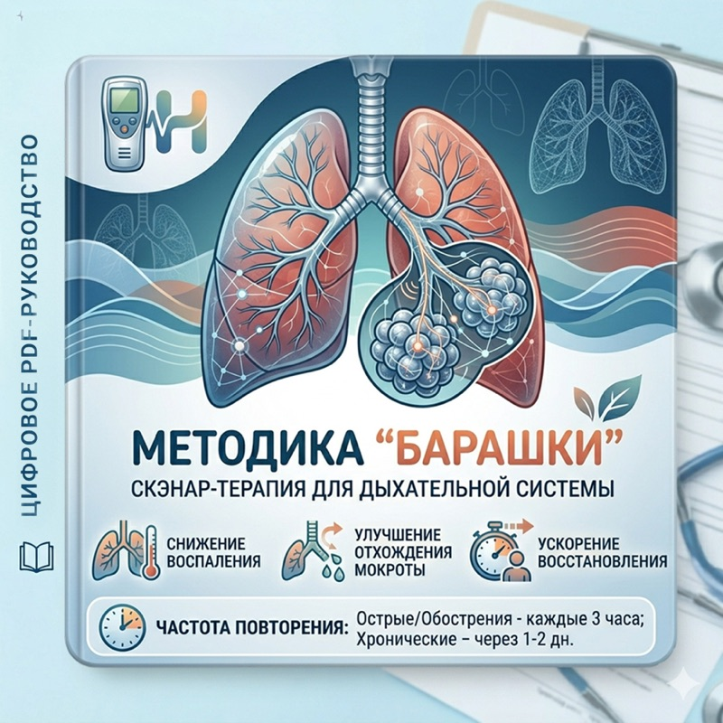
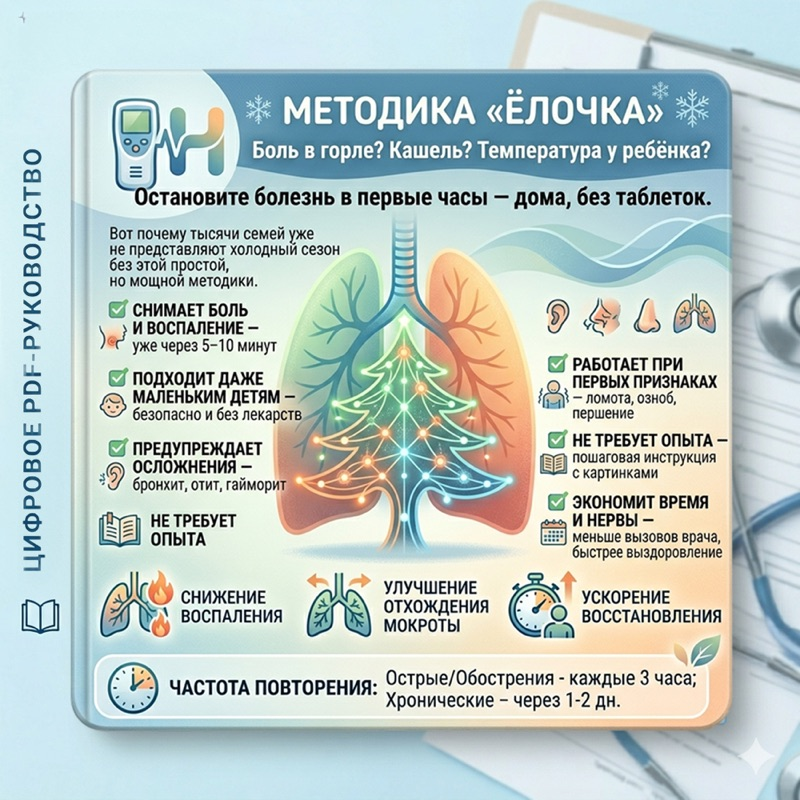
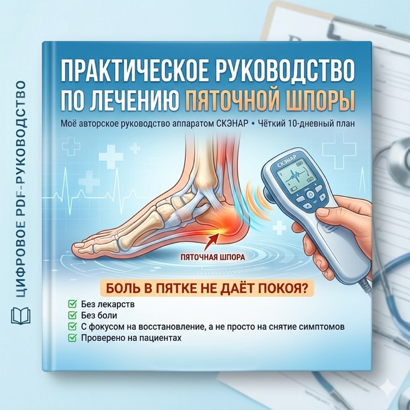

Аппарат
ЧЭНС-01 СКЭНАР-М (флагман)
Самый функциональный аппарат «домашней» серии: ЖК-дисплей и расширенный набор режимов для лечения дома.
16 000 ₽Заказать
+7 (962) 788-39-75 · Константин Владимирович
+7 (923) 404-73-35 · Татьяна Анатольевна
Авторские базовые и тематические школы Татьяны Анатольевны Никитиной: научитесь помогать себе и близким аппаратом СКЭНАР дома — уверенно и безопасно.
Школа помогает перейти от инструкции к реальной практике: какие зоны, режимы и сколько по времени, что делать с детьми и пожилыми, как сочетать с питанием и нагрузками.
Основы работы с аппаратом, диагностические режимы, индивидуальная программа восстановления.
Отдельные программы: дыхательная система и ЛОР, ЖКТ и аллергии, суставы и позвоночник, гинекология, косметология, геронтология и другие. Стоимость и даты уточняйте по телефону.
Выберите тему, которая актуальна для вашей семьи, — или пройдите базовый курс целиком.

Врач-физиотерапевт, бывший детский кардиолог. С 2014 года — сертификат ОКБ «РИТМ» на обучение пользователей приборов СКЭНАР.
Самый функциональный аппарат «домашней» серии: ЖК-дисплей и расширенный набор режимов для лечения дома.

При кашле любого происхождения: ХОБЛ, астма, бронхит, постковидные изменения. Схема зон, режимы, советы для детей и взрослых.

Боль в горле, кашель, температура у ребёнка — остановить болезнь в первые часы дома. Пошаговая инструкция с картинками.

Авторское практическое руководство: чёткий 10-дневный план воздействий аппаратом СКЭНАР.